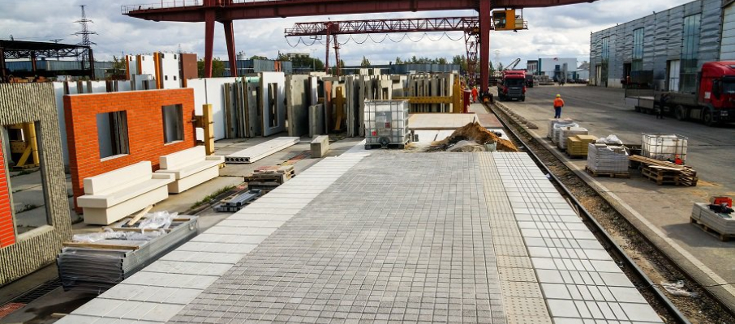
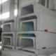
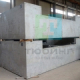

Каталог

Плиты дорожные железобетонные предназначены для покрытий городских дорог. Плиты изготавливаются из тяжелого бетона длинной 3 м с ненапрягаемой арматурой и длинной 6 м с предварительно напряженной арматурой и предназначены для устройства постоянных и временных городских дорог под автомобильную нагрузку Н-30 и Н-10.
-

Водоотводные сооружения железобетонные по серии 3.503.1-66. | Кол-во изделий (21)
-

Косогорные водопропускные трубы для железных и автомобильных дорог по серии 2338, вып.1 | Кол-во изделий (95)
-

Дорожные плиты по ГОСТ21924.2-84, 3.503-17, 3.503.1-93, 3.504.1-20 | Кол-во изделий (62)
-

Железобетонные короба КБ для мостов по серии 3.501.1-167 выпуск 1. | Кол-во изделий (13)